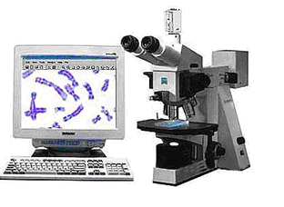

一、产品名称：染色体核型分析系统
二、招商编号：设备-染色体-001
三、产品说明：
一）.生产厂商：Vedio-Test 公司，可配蔡司、莱卡、奥林帕斯或尼康正置单色显微镜

二）、性能介绍
1、图像采集
1） 摄像头：专业科学级高分辨CCD摄像机
2） 高分辨专业图像采集卡
3） 图像采集卡驱动软件
4） 视频线
5） 操作手册
6） 显微镜转换接口
2、染色体核型分析软件和专业图像数据库软件
1）VideoTesT-Karyo 3.1 & Ideogram Analytics Software最新3.1版本染色体全自动核型分析软件
（1） 适用于人、动物和植物等各种不同生物的染色体核型分析
（2） 染色体配对准确率高
（3） 内存人类染色体400条、550条和850条带型模式图及常见实验动物染色体模式图
（4） 可根据用户要求输入稀有物种（包括动物和植物）的染色体模式图，并设置分析系统
（5） 可进行明场下（光学显微镜）及暗场下（荧光显微镜）各种带型（G带、R带和Q带）的全自动染色体核型分析
（6） 操作界面设计独到、直观，所有功能均在一个主界面下完成，不必到菜单中寻找，操作简便易学
（7） 可全自动进行染色体核型分析，其内容包括如下5个图标式工具框，均位于一个主界面上：
① 图像采集
② 图像分析
③ 自动配对排列
④ 报告结果打印
⑤ 图像数据库
（8） 核型分析时，可自动进行如下步骤：
① 粘连和交叉分割：在交叉处点击鼠标即可分开
② 去除杂质和背景：点击鼠标即可完成
③ 对比度调节，平滑和锐化调节：增加染色体带型反差，使图像清晰
④ 配对排列：点击鼠标即可全自动完成染色体排列，并可显示着丝粒位置
⑤ 图像放大和缩小：可将图像调至全屏，也可任意放大和缩小图像
⑥ 染色体上下颠倒或任意方向旋转
⑦ 拉直
⑧ 镜面转换
⑨ 任意切割和连接等
（9） 可进行多视野图像连续捕获和拼接，并可将分散在显微镜视野外的染色体合并到一个图像内
（10） 可从摄像头采集图像，也可从磁盘、光盘和计算机内存中打开图像，或从剪贴板中粘贴图像，进行核型分析
（11） 可在配对排列的每一条染色体旁显示标准模式图，亦可仅于所选的一个或数个染色体旁显示模式图
（12） 可在中期分裂相或排列好的核型中标注各种字体、大小和颜色的文字、符号、线条和箭头等
（13） 自动记录每一分析步骤，可任意返回和纠正所操作的每一步骤
（14） 保存原始图像以备查询
（15） 软件具有自我学习功能和自动记录功能
2）VideoTesT Database 4.0 Software最新4.0版本细胞遗传学专业图像数据库软件
（1）贮存图像和各种数据资料，内容、格式可根据不同实验室的特殊需要任意设定；
（2）内存多种报告格式，供用户选择，也可根据不同用户的要求，设置不同内容、格式和文字的报告格式；
（3）可任意设置关键词，多方式快速准确地检索保存于数据库中的图像与病历资料等分析结果；
（4）不同图像与分析储存的数据资料可分类保管于自我设置的不同数据库中，互不干涉。
（5）方便的各种图像与数据资料的分类管理，以及分析报告打印。
3）仪器维护：
仪器硬件有专业人员负责维修，免费保修一年，终身维修。
4）仪器应用培训：
负责免费培训院方实验技术人员相关操作，直到掌握为止。
5）新技术与新信息：
及时提供相关领域新技术与新信息，免费参加香港自然基因生命科学有限公司在国内举办的相关学术交流活动，并定期回访用户。
6）软件升级：
软件免费在网上升級，为同时期国际最新版本。